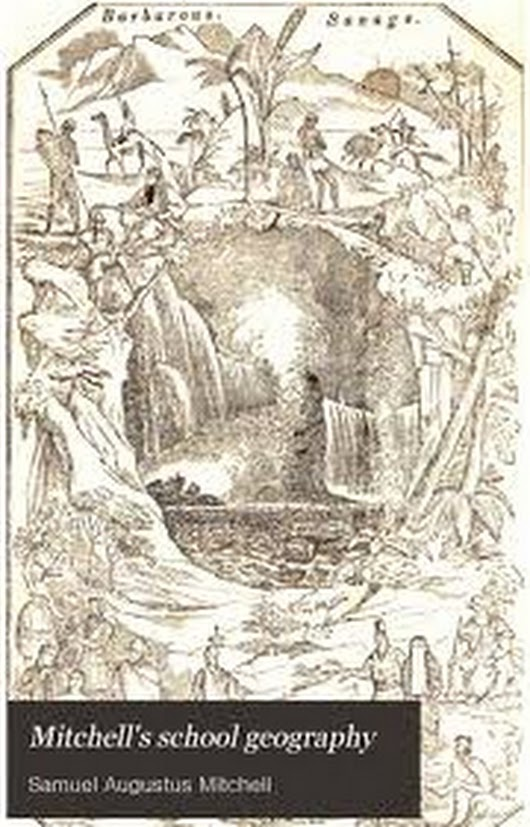

|
回目录 回主页 |
2017-12-25 郭双林 近代史前沿 文章来源：《中国人民大学学报》2017年第6期 更新时间：2017年12月22日 ［摘要］近代英美等国文明等级论有三级制、四级制、五级制三种模式。其思想源自18世纪苏格兰启蒙思想家们关于历史发展和人类进步的讨论。1803年英国地理学家亚当斯率先提出这一理论，1810年被丹麦裔法国地理学家康拉德·马尔特·布戎抄入所撰《普通地理学》一书。1822年英国出版的大型辞书《爱丁堡地名辞典》对这一理论作了详细阐述。1820年前后这一理论被美国中学地理学教师约瑟夫·埃默森·伍斯特和威廉.C.伍德布里奇引入中学地理学教科书，之后迅速席卷英美等国的中学地理学教育。 ［关键词］文明等级论；地理学教科书；《爱丁堡地名辞典》；苏格兰启蒙运动

［作者简介］郭双林：历史学博士，中国人民大学历史学院教授，博士生导师（北京 100872）
作为一种19世纪初年开始风行于英美等国的殖民主义学说，文明等级论把全世界不同国家和地区的不同民族的不同发展水平划分为不同的等级，这一学说通过进入中学地理学教科书而转化为西方各国国民的常识，并伴随殖民主义的扩张流传至世界各地。 目前学术界相关研究成果，外文方面主要有艾伯特.M.克雷格所著的《文明与启蒙：福泽瑜吉的早期思想》（美国哈佛大学出版社2009年出版）。中文方面主要有刘禾教授主编的《世界秩序与文明等级：全球史研究的新路径》（北京生活·读书·新知三联书店2016年出版）。在后者收录的《从近代编译看西学东渐——一项以地理教科书为中心的考察》一文中，笔者曾对西方文明等级论在近代中国的传播做了比较系统的考察。本文的主要目的，是把目光转向西方，去追溯近代以来英美等国文明等级论的源头。 让我们先从19世纪英美等国的中学地理学教科书说起。 一、中学地理学教科书的编纂与文明等级论的风行 教科书的任务是向国民学校的学生传授科学文化知识，以培养现代民族国家的国民。但在19世纪的英美等国，教科书特别是地理学教科书成为文明等级论的主要载体。就目前掌握的资料看，至晚到19世纪初，文明等级论在英美等国已经进入中学地理学教科书。以后随着此类教科书的广泛使用，文明等级论也在英美等国得到普及，成为各该国国民的一种常识。 首先将文明等级论引入地理学教科书的，可能是美国的约瑟夫·埃默森·伍斯特和威廉.C.伍德布里奇。两人都是耶鲁大学的毕业生。1819年，伍斯特在波士顿出版了其编写的《古今地理学基础》一书，其中在论及“人类”时写道：“人类物种可以被认为存在蒙昧国家（the savage state）、 野蛮国家（the barbarous state）、半文明国家（the half-civilized state）和文明国家（the civilized state）。”[1]这是一种四级制文明等级论模式。此书于1822年在波士顿再版，1828年又出了修订版。1820年，伍斯特编写的另一部地理学教科书《现代地理学纲要》在波士顿出版，其中在 “人类”这一标题下也对文明的四个等级有简要的介绍。[2]1823年，伍斯特在其编写的第三本地理学教科书《地球和它的居民概要》一书中又一次介绍了文明等级理论。[3] 1821年，伍德布里奇在哈特福德出版了其编写的《地理学入门》，其中在“文明”这一标题下写道：“人类被发现处于五种不同的社会状态：蒙昧（the savage）、野蛮（the barbarous）、半文明（the half-civilized）、文明（the civilized）和开化（the enlightened）。” [4]这是一种五级制文明等级论模式。此书以后多次修订再版。1824年，伍德布里奇在哈特福德出版了他和美国女权运动的先驱、特洛伊女子神学院院长艾玛·威拉德合编的《古今地理学通论》，其中在论及“文明”时再次对五级制文明等级论作了比较详细的介绍。[5] 伍斯特和伍德布里奇编写的地理教科书问世后，受到极大欢迎，其他各中学地理学教科书的编纂者和出版机构步其后尘，文明等级论很快席卷美英等国中学地理学教育。其中充斥着四级制文明等级论的地理学教科书，除上面提到的伍斯特的几部著作外，还有美国神学博士杰迪代亚·莫尔斯和其儿子西德尼.E.莫尔斯合编的《新体地理学》第23版，该书于1822年在波士顿出版。查尔斯·奥古斯塔斯·古德里奇编写的《现代地理学大纲》，1826年在哈特福德出版，1827年在波士顿再版，以后又曾多次印刷。英国约克郡聋哑学校校长查尔斯·贝克编写的《智环启蒙垫课初步》和《智环教师手册》，二书于19世纪40 年代出版，均以四课的篇幅介绍了蒙昧、野蛮、半文明、文明四个等级。《智环启蒙垫课初步》后来由英国传教士理雅各译为中文，1856年由香港英华书院出版。美国人沃伦修订的《公立学校地理》，1864年在费城出版。J.奥尔尼编写的《实用现代地理学》，1829年在纽约出版。 19世纪充斥着五级文明等级论的地理学教科书，除上面提到的1821年美国人伍德布里奇出版的《地理学入门》和1824年出版的他与艾玛·威拉德合编的《古今地理学通论》外，还有美国的米切尔在所编的《米切尔中学地理与地图集》，1839年在费城出版。由于米切尔在地理学教科书编写方面非常成功，后来出版商专门为米切尔出版了《米切尔新地理系列》，其中《米切尔地理入门》一书也曾介绍五级制文明等级论。英国出版商钱伯斯兄弟出版社出版的《地理学入门》，1840年在爱丁堡出版。美国凯尔·佩尔顿编写的《佩尔顿半球的关键》，1851年在费城出版。1855年佩尔顿在费城出版的《佩尔顿最新和改良系列概图关键》一书保留了这一做法。 此外，1834年美国的亨廷顿在出版的《现代地理》一书在介绍世界各国的文明时写道：“在文明方面各民族的等级，根据其知识及言谈举止，分为（1）蒙昧人，（2）野蛮部落，（3）半文明民族，（4） 文明或开化民族。[6]这种划分保留了五级制文明等级论的名称，实际上只有四级，应该是介于四级和五级之间的一种特殊情况。1838年，亨廷顿在哈特福德出版的《亨廷顿现代地理学导论》中介绍了五级制文明等级论。 许多地理学教科书为了加深学生的印象，在论及文明等级时，除文字介绍外，还常常配有表格或图版；为了强化学生的记忆，在课文之后配有相关习题。如莫尔斯父子合编的《新体地理学》第23版中就列有下表：[7] Condition Nations Savage American Indians, Negroes, and natives of New Holland. Barbarous Arabs, Moors, Tartars, Malays. Half-civilized Chinese, Japanese, Hindoos, Persians, Turks. Civilized Europeans and their descendants; particularly, the British, French and Germans. J.奥尔尼在《实用现代地理学》中论及“社会形态”时，将当时世界上47个国家的名称、政府形态、宗教、文明形态列成表格。其中在开列的13个美洲国家中，英属北美殖民地和美国为开化一级，印地安人、亚马逊人和巴塔哥尼亚人属于蒙昧一级，其他8个国家属于文明一级。在开列的20个欧洲国家中，除西班牙和土耳其属于文明一级外，其他国家均属开化一级。在开列的13个亚洲国家和地区中，阿拉伯属于文明一级，西伯利亚属于蒙昧一级，其他国家和地区均属半文明一级。对非洲国家，表中没有开列。[8] 1839年米切尔在所编的《现代地理》一书中介绍人类文明发展阶段时，插有一幅图片，非常完整、生动地展示了当时世界上存在的蒙昧、野蛮、半文明、文明和开化四个等级。1845年该书再版时不仅将此图做为惟一一幅书前插图，而且被作为封面，由此可见文明等级论在该书中的地位。 随着文明等级论的广泛流传，很快溢出了地理学教育这一领域。1852年英国伯顿撰写的《政治经济学》一书在爱丁堡出版，书中的“文明”一节专门讨论了不同民族由野蛮到文明的发展过程。书中虽然没有像地理学教科书那样，明确将人类文明划分为几个等级，但先后提到蒙昧、野蛮、半文明和文明国家，实际上蕴含着一种四级制文明等级论。[9]此书后由傅兰雅口译，应祖锡笔述，1885年以《佐治刍言》为名由江南制造局刊刻。 克雷格认为，“从1830年代到1870年代，一张文明发展阶段清单成为高中地理教科书的标准特征”。“文明等级论……连同对世界各地宗教、语言、种族和政府的简单描写被看成地理学的一个附加的功能。它们常常被插在教科书的开头或结尾处，这些教科书主要通过不同大陆或国家来描述世界。”直到1880年代以后，这种开列一张文明发展清单的做法不再流行，但此类残存的假设依然非常活跃。甚至在整个1890年代乃至以后，根据文明发展水平来讨论不同国家和种族的相对成就的现象依然存在。“可以毫不夸张地说，在几乎长达一个世纪的时间里，一种从蒙昧（savagery）到文明的单线进步观念是美国中等教育标准的一部分。”[10]实际上，在整个19世纪，“一种从蒙昧（savagery）到文明的单线进步观念”不仅是美国中等教育标准的一部分，而且是英国乃到整个欧洲中等教育标准的一部分。 二、文明等级论不同层级的意涵及其指称对象 不论是哪一种文明等级论模式，除个别情况外，基本不出蒙昧、野蛮、 半文明、文明和开化五个层级，而每个层级都有其特定的意涵和指称对象。现依次对其略作讨论，从中我们也可以看出，随着时间的流逝，文明等级论不同层级的意涵也在发生变化。 蒙昧国家（民族或部落) 自近代以来，在中文世界对the savage就没有一个统一的译名，野蛮人、自然人、未开化人、蒙昧人，五花八门，应有尽有。不过指向是明确的：“澳大利亚和新西兰的土著部落、北美洲的许多印第安人部落、南美洲不同地区的印第安人、非洲大多黑人部落仍然处在蒙昧状态。”[11]其文明形态的特征也很明显。莫尔斯父子认为：“在蒙昧状态下，人们完全依靠渔猎和地球上的天然物产生存。他们一般稀疏地分散在广大的土地上，他们部落很小，但其成员彼此联系紧密，但他们性格暴燥，对毗邻部落充满敌意。他们突出的优点是勇敢、坚韧、热爱自由和非常高的自尊心。他们最大的缺点是野蛮和报复心强。”[12]伍德布里奇认为：“在蒙昧状态下，人们主要通过渔猎或抢劫来维持生存，衣兽皮，一般露天居住，或只有非常简陋的小棚屋。”“他们很少农业和工艺知识，他们没有领土概念，没有法律制度。他们很少在城镇和乡村集中居住。”[13]亨廷顿认为：“蒙昧是自然部落，他们以渔猎为生，衣兽皮，居住在简陋的棚屋内，或栖身于地球上的兽窝和洞穴内。他们对技术一无所知，在生活习惯上迁徙不定，没有法律，在各部落内有一点点公共财产，没有书写语言和政府。”[14]佩尔顿认为：“在蒙昧状态下，人们主要靠渔猎和地球上的天然物产生存；他们露天居住或居住在极其粗劣简陋的棚屋内，而且既不能读也不能写。”[15]沃伦认为：“蒙昧人处于最低一级。他们对土地没有兴趣，以植物的根块和野果，或渔猎为生。一些部落对用火一无所知，吃生食。他们几乎没有法律，没有大的城镇。”[16]查尔斯·贝克认为：“他们中的最低等者没有定居，甚至没有为应付将来需要而存储食物的本能，而日复一日地依赖于土地和海洋的天然物产。他们有时要忍受极度的饥饿，这些饥饿导致极端的残暴和自私，在一些部落自相残食。在战争中他们极端残忍和具有报复性，许多人将敌人摧残至死，然后喝敌人的血。他们在森林里游荡，寻找果料、根块或野兽；他们不事农业生产，甚至不饲养牲畜。他们修建的棚屋极其简陋，以至几乎无法抵挡风雨；他们既无家俱也无生活用具。”“大多蒙昧部落喜欢战争。没有战争或不狩猎时他们只是晒太阳，而妇女要承担全部家务劳动。他们需求很少，食物、一点衣服、遮风避雨之所、一定的武器，这就是他们的全部需求。他们有些微商业知识，因为他们要用狩猎所得动物皮肉交换其他人采集的果实和根块。”“一些人有一些智谋，并在武器制造和狩猎过程中得到实践。他们居住在海岸或大河附近，刳木为舟，并利用其在河上垂钓或往来行驶。”[17]由上可知，蒙昧国家（民族或部落）至少具有如下特征：第一，处于文明等级的最低层，他们只是自然部落，没有任何进步。第二，他们主要通过渔猎或抢劫来维持生存，不事农业生产，甚至不饲养牲畜。个别部落有些微商业知识。第三，他们中的一些部落对用火一无所知，吃生食，衣兽皮，一般露天居住，或只有非常简陋的小棚屋，没有大的城镇。第四，他们部落很小，但其成员彼此联系紧密；没有政府，没有领土概念，没有法律制度。第五，没有书写语言，总是将其女人视为下等人。第六，自私、残暴、嗜血，喜欢战争。 野蛮国家（民族）: 自近代以来，the barbarous 一般译为野蛮或未开化。哪些国家或民族属于野蛮一级？主要有“阿拉伯人、摩尔人、鞑靼人和马来人”[18]。查尔斯·贝克说的更详细一些：“野蛮民族主要居住在大沙漠，如居住在阿拉伯半岛以抢劫为生的贝都因人部落；阿富汗人和其他好战的波斯部落和民族，许多印度部落因为英国士兵的到来才远离了劫掠和杀戮。鞑靼也被尚处在野蛮状态下的部落所占据。在努比亚，人们异常落后，没有任何生活技术；在北非的所有国家，人民是邪恶、残忍和无知的；他们中的许多人是强盗。居住在撒哈拉沙漠的部落主要以抢掠为生；阿善堤人和达荷美人好战而嗜血；南非许多游牧部落以抢劫为生；马达加斯加土著拥一个美丽的岛屿，但他们中的一些人土地耕作水平极其低下，另一些人则长期处于战争中，显示了蒙昧生活的全部征象。太平洋岛屿和印度群岛仍然被那些处于野蛮状态的部落居住着，尽管他们通过与欧洲诸国家频繁的交流而有所进步。”[19] 至于其特征，莫尔斯父子认为：“野蛮人主要依靠放牧和粗放农业维持生计。处于这种形态的人们一般以盗窃和抢劫为业。他们精力充沛，有时具有令人尊敬的原则性和奔放的热情。”[20]伍德布里奇认为：“在野蛮状态下，人们依靠农业和放牧牛羊生活，他们拥有一些工艺知识。”“野蛮民族在乡村聚居，有一些正规的政府组织和宗教组织机构；但他们没有书写语言和书籍。”[21]亨廷顿认为：“野蛮部落的人没有书本和书写语言，但多少了解一些工艺和工具，有一些政府机构和宗教崇拜。一些野蛮民族过着迁徙不定的游牧生活，居住在帐篷内；其他一些民族虽然过着定居生活，也主要以地球上的天然物产为生。”[22]佩尔顿认为：“在野蛮状态下，人们主要通过放牧和农业来维持生存；居住在毡帐内，驱赶着牲畜群不断迁徙。”[23]沃伦认为：“在野蛮状态下，人们比在蒙昧状态下稍有进步。他们拥有许多马、牛和其他动物，他们驱赶着这些牲畜在牧场间来回迁徙。他们一般居住在帐篷内，对农业不太注意，而从他们的牲畜群上，或通过渔猎获得生活来源。” “蒙昧民族和野蛮民族总是忙于战争，他们沉迷于盗窃和抢劫——残忍而带有报复性，总是将其女人视为下等人。”[24]查尔斯·贝克认为：“野蛮民族……带有文明民族和蒙昧民族的某些特征。”“野蛮民族和部落常常拥有大量的兽群，他们也有成群的骆驼和马匹；他们了解战争，并通过战争变得野蛮、残忍、狡猾；他们没有勤劳的定居习惯，他们宁愿长途跋涉，也不愿自己耕种土地，或者追求那些有益的技术。他们中的一些人知道欧洲制造品的价值，而且努力通过交换获得这些产品，如果他们不能通过抢劫得到它。”[25]由上可知，野蛮国家（民族）至少具有如下特征：第一，比在蒙昧状态下稍有进步，但尚不完善。第二，主要依靠放牧和粗放农业维持生计，拥有一些工艺知识。一些民族虽然过着定居生活，仍主要以地球上的天然物产为生。第三，一般居住在帐篷内，驱赶着牲畜群不断迁徙。从事粗放农业者在乡村聚居。第四，有一些正规的政府组织和宗教组织机构。第五，没有书本和书写语言，总是将其女人视为下等人。第六，精力充沛，有时具有令人尊敬的原则性和奔放的热情。总是忙于战争，沉迷于盗窃和抢劫。 半文明国家（民族) the half-civilized 的译名在近代比较一致，即半文明或半教化。哪些国家（民族）属于半文明或半教化一级？“大部分半文明民族属于蒙古人种，他们居住在欧亚大陆东部，中国人、日本人、波斯人、土耳其人和印度人是半文明人。”[26]“中国人、日本人、波斯人、印度人、土耳其人和北非摩尔人是半文明民族。” [27] 关于半文明国家（民族）的特征，莫尔斯父子认为：“在半文明民族中，农业和一些出色的制造技术已经达到非常完美的程度，但是对科学、文学和外贸却几乎一无所知。在这些民族中，政府均极其专横，人民非常安静、勤劳，同时也驯服、懦弱，非常容易被野蛮的邻国征服。鞑靼人和阿拉伯人总是征服人，而中国和印度总是被征服。”[28]伍德布里奇认为：“半文明国家就像中国和南亚的其他国家一样，他们懂得农业，拥有许多高水平的工艺，有一些图书和知识，拥有确定的法律和宗教。”“他们仍然像对待奴隶一样对待他们的女性，保留许多像野蛮民族那样的别的习惯。”[29]古德里奇认为：“半文明人以农业和制造业为生，有时达到一个很高的水平，但外贸的水平很低。”[30]亨廷顿认为：“半文明国家拥有书写语言和一些书本知识，对技术相当熟练，拥有政治和宗教机构，但他们的商业活动局限于住地附近，在许多生活习惯方面，尤其是在奴役和限制他们的女性方面还很野蛮。”[31]佩尔顿认为：“在半文明状态下，人们已经懂得农业和许多技术，而且有一些书本和知识，建立了成文法和宗教。”[32]沃伦认为：“半文明的民族在农业经营方面已经有相当高的技术，他们建造房子和船只，有书籍和一定程度的知识，熟悉多种其他工艺；但对陌生人嫉妒，很少进步，几百年来没有什么变化。”[33]查尔斯·贝克认为：“半文明民族有书写语言、法律和一些书籍，他们与其他民族进行贸易；但是忽视教育，很少关心老弱病残。他们热爱战争，总是被暴君所统治，他们的法律也常常被随意践踏。”“和平时期能够使他们开垦土地，从事有用的技术和制造，建设宽敞的住所，使他们的工业和技术获利。一些聪明人率先致力于不同的追求，人民的工业越发展，国家就变得越强大。一些人因此致富，而且如果他们觉得安全，他们能够享受安逸和奢华。受榜样的激励，其他人也会亦步亦趋。定居和永久性的职业代替了战争；与其他更先进民族的交往纠正他们错误的观念。战争的停息使人口增长，新的工艺从劳动中产生。农业不断发展，制造业不断扩大，商业活动受到鼓励，社会变得长治久安。聪明的统治者修改不公正的法律，生活和财富得到保护。渐渐地文学得到引介，民族从半文明走向文明。”[34]由上可知，半文明国家（民族）至少具有如下特征：第一，农业和一些出色的制造技术已经达到一个非常完美的程度，但是对科学、文学和外贸却几乎一无所知。第二，政府均极其专横，法律常常被随意践踏。人民非常安静、勤劳，同时也驯服、懦弱，非常容易被野蛮的邻国征服。第三，在许多生活习惯方面，尤其是在奴役和限制他们的女性方面，还很野蛮。第四，对陌生人嫉妒，很少进步。第五，具有从半文明走向文明的可能性。 文明国家（民族） 近代以来对The civilized翻译前后有所变化。晚清时期首先用汉语“文明”一词来翻译civilization的是日本的福泽谕吉。这一译法存在明显错误。因为如果文明是社会发展的最高形态，那么五级制文明等级论中的the enlightened将无处安置。本文将其译为开化，亦属无奈之举。正确的做法应该将The civilized译为开化或教化，而将the enlightened译成文明。清末由于日译著作的风行，福泽谕吉的这一错译被国人所认可。埃利亚斯说过：文明“这一概念表现了西方国家的自我意识……它包括了西方社会自认为在最近两三百年内所取得的一切成就，由于这些成就，他们超越了前人或同时代尚处‘原始’阶段的人们。”[35]能够划归文明民族的当然非欧美国家莫属。所以“大多文明民族属于高加索人种。几乎所有住在欧洲的人们，以及他们在美洲和世界其他地方的后裔属于这个等级。”[36] 对文明国家（民族）的特征，莫尔斯父子认为：“在文明国家中，农业已经技术化和科学化，制造业规模宏大，文学、科学和所有的技术既实用又漂亮，已经达到一种非常高的水平，商业遍布全球，而且军事技术是如此娴熟，以至几乎世界所有的岛屿和海岸都被殖民化。”[37]伍德布里奇认为：“这些国家具有很高的科学和工艺水平，尤其是印刷术；他们对待女人就像同伴。”“在那些尚未开化的文明民族，有许多习惯仍然是野蛮的，大多数人保留了极其明显的愚昧现象。”[38]古德里奇认为：“文明国家在农业、制造业、文学、科学、技术和商业方面均达到很高的水平。”[39]佩尔顿认为：“在文明状态下，人们熟悉技术和科学，通过农业、制造业和商业来维持生计。”“欧洲人和他们的后代一般被称为文明人或开化人，但文明的程度在不同的国家差别也非常大。”[40]沃伦认为：“在文明民族中，农业、制造业和其他技术已经达到一个很高的水平……文明人的生产品和奢侈品靠各个国家和地区供给。”“他能够测量天体的大小和距离……文明民族在知识方面进步迅速，因为他们彼此之间保持经常的交流，包括地球上最遥远的地方。他们有大学、教堂、医院、中学和许多其他有用的机构。”[41]查尔斯·贝克认为：“文明的表象触目皆是。在英国，他的城市、宫殿、寺庙被其熟练、聪明、精巧和勤劳的人民建立起来，使用的原料已经被探寻、获得，并被施用于合适的目的……金属已经被熟练地运用于有用而简洁的生活技术，或用于制造工具”。“一个人置身于高度文明的社区，将无法用语言描述其舒适和便利。商店有来自世界各地的锦衣美食；长途汽车和火车可以运送其商品和书信；矿工采掘煤炭为其准备过冬，采掘铁矿为其制造工艺品；报纸为其报道来自本国和遥远国度的报告；书籍用来保存知识和当代人的发明。勤劳的艺人也拥有非文明生活所不知的数不清的舒适，无论贫病弱衰苦，人们均能在住、衣、食、职业、医疗和其他方面得到他们所需要的保障。”[42]由上可知，文明国家（民族）至少具有如下特征：第一，农业已经技术化和科学化，制造业规模宏大，文学、科学和所有的技术已经达到一种非常高的水平，商业遍布全球。第二，军事技术是如此娴熟，以至几乎世界所有的岛屿和海岸都被殖民化。第三，在知识方面进步迅速，拥有大学、教堂、医院、中学和许多其他有用的机构。第四，他们对待女人就像同伴。第五，无论贫病弱衰苦，人们均能在住、衣、食、职业、医疗和其他方面得到他们所需要的保障。第六，在那些尚未开化的文明民族，有许多习惯仍然很野蛮，大多数人保留了极其明显的愚昧现象。 开化国家（民族) 近代以来，对the enlightened，除谢洪赉译为“文明”外，尚未见其他译法。本文译为“开化”，实属不得已而为之，这在前面已经说过。哪些国家属于开化一级？“开化国家主要分布在欧洲”[43]。“属于开化的国家有美国、英国、法国、瑞士和德国的某些城邦。”[44] 关于此类国家(民族)的特征，伍德布里奇认为：“在这些国家内部，知识已经得到普及，科学和艺术已经非常完善。”[45]佩尔顿认为：“在开化状态下，人们已经使技术和科学非常完善，而且在工业、智能和规划方面出类拔萃。”[46]米切尔则以问答的形式指出：“开化民族以其居民的聪明、进取和勤劳著称。在这些民族中，技术与科学也达到非常完美的地步；妇女受到礼遇和尊重；自由政府的原则得到理解；教育和知识比其他文明国家得到更广泛的普及。”[47] 由此看来，文明等级论犹如一座金字塔，开化和文明国家（民族）居于顶端，蒙昧和国家（民族或部落）居于底层，半文明国家（民族）夹在中间，这是一种典型的等级结构。同时，由于每一层级都有明确的指称对象，所以其中隐含了一幅世界文明地图，一种殖民主义者的世界模式。 现在的问题是：这种文明等级论从何而来？我们知道，教科书在编写过程中可能存在理论建构的可能，但一般而言，教科书并非原创性研究成果，而是对某学科既有知识的综合归纳和系统阐述，其主要任务不是进行理论建构，而是向在校学生传播既有知识。既然如此，在文明等级论引入地理教科书之前，是否有完整的理论表述呢？换句话说，作为一种完整理论形态的文明等级论，出现在何时？由何人表述？如何表述？带着这些问题，我们把目光投向18世纪末19世纪初的欧洲。 三、亚当斯、布戎和《爱丁堡地名辞典》对文明等级论的理论表述 就目前所知，最先提出文明等级论者可能是英国地理学家亚当斯（Th. Adams）。关于亚当斯的生平，经笔者和朋友在英文、法文和德文文献中查找，未能发现相关信息，只知他曾在一篇用法文写成的论文《普通地理学的历史政治导论》中，将世界上所有为人所知的国家分别划分为“野性民族”, “蛮族或半野性民族”和“文明民族”三个层级。这是一种三级制文明等级论。此文刊布于由丹麦裔法国地理学家康拉德·马尔特·布戎与其导师Edma Mentelle主编、由多国地理学家、历史学家、博物学家、旅行家集体撰写的多卷本《数学、自然和政治地理学》中，此书于1803年在巴黎出版。 1810年，布戎在其出版的《普通地理学》一书中抄录了亚当斯的三级制文明等级论，唯一不同的是，他将第二级“蛮族或半野性民族”改成了“蛮族或半开化民族”。[48]此书的英文版先后于1822年和1824年在英国伦敦和美国波士顿出版。其中写道：不同的民族可以分为三个大致的类别。蒙昧人不懂书写技巧，或不知道借用与书写相同的习惯性符号来稳固他们的思想。他们的模糊的、摇摆不定的观念仅仅与刺激他们感官的对象相联系。他们热衷于以一种在我们看来非常可笑的方式装饰自己的身体；他们喜欢锻炼身体，在这一方面远胜于我们。他们的勤劳一般只限于开辟一点园圃、垂钓和捕猎。然而，他们中的一些人制作漂亮的工艺品，甚至拥有宽敞和漂亮的住宅。野蛮人或半文明人通过理解书写、成文法、以正式的庆祝活动表达宗教意识，或者一个更加整齐的军事制度，已经明显摆脱了蒙昧状态。但是这些人掌握的知识杂乱无章、支离破碎。他们的策略局限于在危险时刻防卫边界，或毫无计划的发动进攻。他们的进步总的来说是缓慢的和不稳定的，因为在迈向文明的进程中，他们对自己应该瞄准的伟大目标毫无所知。“一个文明的民族是这样一个民族，它以科学的形式对知识进行分类；它提高了手工工艺的档次；它通过表达人类内心不同的感情创造了‘纯文学’；它拥有一个固定的立法、政策和战争体系，不仅为当前的环境规划，而且规划未来——在这样一个民族内，未遭迷信和狂热玷污的基督教在纯化和提升公共道德方面展示了正面的影响——最终，这个民族承认伟大的公法原则，即在和平时期像对待朋友一样对待每一个别的国家，在战争时期尊重每一个敌对国家；承认毫无防卫能力的公民的财产权。”[49] 1822年，一部由多人合作编写的大型辞书《爱丁堡地名辞典》（六卷）在英国爱丁堡出版。该书第1卷《导言》包括三个不同的主题：“地理学史”、“自然分界线和地理结构总论”、“文明和政治地理总论”。其中 “文明与政治地理总论”通篇讲的是文明等级论。虽然该部分很难说具有“元”理论的意义，但因其对文明等级论的阐述特别详细，我们在此将其作为一个标本，看其是如何对文明等级论进行表述的。 该书按照人类的生存状态将其划分为蒙昧、野蛮、半文明和文明四个层级。对蒙昧国家，书中写道，其特征是人类赖以为生的技艺极不完善；他们到处流浪，不守规则，保留着野蛮的生活习惯，没有一点正规的政治组织机构。在这种状态下，人们还没有学会驯化低等动物，使其屈从于自己的愿望；他们几乎完全靠渔猎和地球上的天然物产为生。尽管人类社会在进步，但这一等级的民族仍然非常多，或者说占据了地球表面上相当广袤的地域。纽荷兰大陆与其毗邻的巴布亚和范迪门[50]岛上的人就处于这一等级的最底层，他们只略高于畜生。在整个北美洲和南美洲，除了被欧洲人占领的地方，其他地方都被一些部落所保留，这些部落的进化程度的确要略高一些，但他们仍然是蒙昧人。即使在他们的领土被大量侵占之后，这些蒙昧人仍保留了超过新大陆一半的土地。欧洲侨民主要聚集在南北两端的沿海国家，广大而美丽的内陆平原无可置疑地被蒙昧的土著所保有。南部海岛充斥着同样愚昧的人口，尽管他们常常以一种温和的形式向更加进步的社会靠近。 如其实际生存的那样，在其分布的广大区域内进行仔细调查后将会很快消除这种错觉，即蒙昧国家被描绘成天真、善良和纯洁的乐园，而背离这种状态的社会则被描写得越来越堕落。的确，一些小的和贫穷的社区没有余隙供人们宣泄激情，一些消极的低犯罪率可能存在着。“但总的来说，人们在这样的社会状态下被编进一些小的社区，社会成员相互之间被紧紧地联结在一起，并带着极其冥顽的敌意，热衷于反对周边的所有部落。出于对战争的嗜好，他们不仅无视每项人性原则，而且纵容自己野蛮狂怒，暴戾恣睢。”[51]作者认为，尽管一些证据也显示他们的品行纯洁而严谨，这或许可以被视为典范，但从别的方面看，他们任意妄为，完全漠视节制和体统。虽然不羁的自由是蒙昧国家的一般特性，但显而易见的是，其酋长的统治摇摆不定，并带有一种偶像崇拜，这在极端的东方专制主义中也极其罕见。尽管存在这些无视规则的行为，但无论如何，在这种低下的状态，人类仍显示了使其越来越伟大的品质。个体或至少是小的的团体，出于防卫、生存和生活的需要，他们只相信自己人。他们寻求一项发明、一种智慧以及一份尊严，这在文明社会的下层并未发现。 对野蛮国家，书中写道，在这一阶段人们主要以放牧为生，同时混杂着一些粗放的农业。好战仍然是其社会风尚，尽管战争法律从总体上看不像在蒙昧部落中那样残忍。政治设施倾向于贵族，人民大众常常处于被奴役状态。“从里外两方面看，这些国家的面貌是粗野的、混乱的；抢劫和海盗成灾，敲诈和勒索风行，并成为一种常规性制度。但无论如何，这些民族在某些方面出现一种令人称道的曙光：富有特色的精神，令人尊敬的原则，以及温暖的家庭与社会情感，所有这些可以被认为是他们的民族特性。”[52]作者认为，在漫长的中世纪，所有的欧洲国家都处于这一阶段。目前非洲一般国家也处于这一水平；尽管非洲大陆北部沿海地区的文明程度曾经要高一些，现在看来已经完全陷入野蛮状态。还可以把阿拉伯、整个中亚高原归入这一名号下。印度群岛的马来人也可以包括在内；尽管占据内陆山地的部落很难说高于蒙昧人。 对半文明国家，书中写道，此类国家包括那些占据了广袤而肥沃的南亚平原的伟大帝国、中国、印度斯坦、波斯和部分土耳其，尽管这些地方最近保留了许多野蛮状态的痕迹。在这些国家里，由于人们非常勤奋，农业和一些出色的制造业得到发展，并达到非常高的完善程度，但对外贸易只是非常有限地存在着。这些国家的政府很久以来总是专制的；而且除了神职人员外，每一种贵族都蜷伏在最高权力的压迫之下。人民有序而勤奋，但驯服、安静而懦弱；所有的改革倾向遭到阻拦，几乎自古以来，社会的整体结构保持一种停滞状态。 书中还专门讨论了野蛮国家与半文明国家的关系，指出：“野蛮国家和半文明国家无论在何处发生接触，由于其更具活力和好战的特性，前者总占据优势，并成为征服者。这种接近存在于整个亚洲；很早以来，亚洲的南方诸帝国早已臣属于鞑靼的君主们。然而，由于技艺和奢靡的吸引，胜利者几乎总是被被征服者所同化，甚至试图脱离他们原来的整体社会框架，学习他们从未接触过的产业。在某种程度上，征服者和被征服者的特征得到互换。在半文明国家当中，人民比君主和当权者更文明；在野蛮国家中，情况则正好相反。因此，印度和中国的鞑靼式野蛮是由外面灌输的，而鞑靼则混合吸收了印度文明和中华文明。”[53] 对文明国家，书中写道，相对于所有其他等级类型，文明国家是社会发展的最后阶段。属于文明阶段的只有欧洲各国，尤其是英国、法国和德国等中欧国家。正是在这些国家里，民族工业部门已经达到一种空前完善的地步。农业在一定程度上得到有效组织，如果不是更勤奋和更坚忍，至少是更熟练和更科学。制造品的质地虽然没有印度斯坦的少数制造品那样精致，但在赢利方面，他们优于所有其他的制造品，而且大量机器得到使用。商业向全球各个角落扩张。政治制度已经成型，通过这些政治制度，公共自由得到保障，在野蛮国家中热衷的骚乱、无序已然绝迹。所有的科学和技术实用而简洁，日趋完善，它们使历史上任何时代、地球上任何地方可堪夸耀的科学和技艺都黯然失色。文明的影响是如此之深，以至人们放弃了各种忧虑，采取一种倒退的方针，甚至停止了进步。与亚洲国家遭到野蛮部落挤压的情况相反，欧洲文明国家远离危险。在彼此之间处于均势的这些文明国家中，军事技术已经得到改进，这使他们在面对那些所有在文明方面进步不大的国家时占有决定性的和完全的优势。这些优势，结合那些规模宏大的海运事业，以一个全新的特征而凸显出现时代——欧洲人的统治笼罩着地球的每一个角落，而且以空前的规模建立起一个殖民体系。 由此看来，《爱丁堡地名辞典》对文明等级论的表述，与当时英美等国的地理学教科书中四级文明等级论的表述基本相同。不过，相异之处也极其明显，这主要表现在以下两点：第一，对各种文明类型的特征介绍得更详细。除《智环教师手册》外，19世纪英美等国的中学地理教科书因为受教材体例的限制，课文内容不可能太过冗长，而《爱丁堡地名辞典》则不同，由于编纂者要在《导言》中对相关理论问题做专门的阐述，因此对各种文明类型特征的介绍要比一般教科书详细得多。不过，有一个现象也值得注意，即此书丝毫没有涉及女性在不同文明形态中的地位，这一点曾是各中学地理学教科书在介绍文明等级论时不可或缺的。第二，对各种文明形态的评价相对要客观一些。或许是受篇幅的限制，或许是出于对其他非欧洲国家和民族的偏见，当时英美等国的中学地理学教科书对蒙昧、野蛮和半文明国家人们的知识进步和道德水准不着一笔，而《爱丁堡地名辞典》的编纂者们在讨论蒙昧国家时，虽然不同意将其描绘成天真、善良和纯洁的乐园，但同时肯定在这种低下的状态，人类仍显示了其越来越伟大的品质。对野蛮国家，一方面指出其落后的特性，同时肯定其在某些方面出现一种令人称道的曙光，即富有特色的精神，令人尊敬的原则，以及温暖的家庭与社会情感。在讨论半文明国家时，则认为此类国家中人民比君主和当权者更文明。当然最为引人注目的是作者在讨论文明国家时，一方面站在殖民主义者的立场上为近代殖民体系辩护，另一方面又颇为睿智地指出，近代世界殖民体系的建立已经在人类历史上开启了一个最有希望的时代。这里所说的希望并非欧洲殖民主义者的希望，而是殖民地半殖民地人民的希望。断言，不出一百年，美洲将从旧大陆获得完全独立。就此而言，我们不得不承认在早期的文明等级论中蕴含着某种进步的、革命性的因素。这在19世纪前半期英美等国的中学地理学教科书中是根本看不到的。 根据思想史的一般规律，一种理论形态的学说不可能凭空产生，它除了现实动因外，更主要地是对某些既有思想观念的概括或理论学说的发展。文明等级论究竟是对哪些思想观念的概括或理论学说的发展呢？换句话说，文明等级论在思想上源自何处呢？ 四、苏格兰启蒙运动与文明等级论的起源 以往学术界对文明等级论未予注意，也就谈不到专门探讨文明等级论的思想渊源问题。不过，近年有人在研究日本近代思想家福泽谕吉时，意外地触及到这一问题。2009年美国哈佛大学出版社出版了艾伯特.M.克雷格撰写的《文明与启蒙：福泽谕吉早期思想》一书，其中有一章专门讨论了苏格兰启蒙运动与文明阶段论的关系问题。 的确，在英格兰启蒙思想家中，亚当·斯密的历史发展四阶段论与文明等级论的四种基本类型最为接近。早在哥拉斯哥大学讲演时，斯密就以概述他的历史发展四阶段论开始：“社会的四个阶段是狩猎、游牧、农业和商业。如果许多人因乘坐的船只失事而被搁置在一个荒岛上，他们得到的第一批食物是土地自然的产物，以及他们能够杀死的野兽。当这些人不能够时时都满足自己时，他们起码会去驯服一些可以驾驭的野兽。在这一过程中如果这些人仍然得不到满足；而当他们看到地球上的自然生长的大量蔬菜，他们将考虑培植这些蔬菜以便能够更多地生产它们。因此，农业在它能够变成一个国家的主要产业之前需要许多改良。”[55]在后来发现的两份关于法理学的讲演笔记中，斯密曾多次运用四个阶段理论中的猎人和游牧两个阶段的历史来论证政权的发生、发展。如他在讨论政权的发展时写道：在一个渔猎国里，只能有少数人生活在一起。因为人多了就会在短时期内把国内全部猎物猎尽，因而缺乏生活资料。至多只能有二三十家人家住在一起，这些人家就构成一个乡村。他们的乡村相距不远。当不同乡村的人们发生争执时，便通过两村居民大会来裁决。因为每一个乡村都有它的领袖，所以整个国家也有个领袖。这个国家是各个乡村的联盟，而酋长们对各个乡村所作的决定有很大的影响，特别是在游牧者中间酋长有很大的权力。在游牧时代，世家比在其他时代更受到尊敬。权能原则起着强大的作用，而他们在维持法律与统治方面怀有最强烈的功利心。斯密还讨论了猎人国与游牧国在战时的区别，指出，猎人是英勇的，但他们的功绩总不是很大的。因为只能有少数人一齐出外狩猎，所以他们的数目很少超过二百人。况且，他们所携带的给养一般只能维持14天。所以来自猎人国的危险不大。但人数多得多的游牧者能够生活在一起，在同一个乡村可能有一千家。阿拉伯人和鞑靼人始终以游牧为生，他们曾好多次造成了最可怕的祸害。“鞑靼头目带着他们的全部牛羊出征，谁给他们战胜，谁就会失去人民和财富。战胜的民族往往赶着牛羊群继续进行征服工作，要是它带着大量的人进了一个已开化的国家，那它就会成为完全不可抵抗的力量。” [56]后来在《国富论》中，斯密也主要以历史发展四阶段论做为时间序列展开论述。斯密的历史发展四阶段论“创造了一个粗略的社会类型学”。[57]而当历史发展阶段演化为不同类型时，文明等级论也就初见端倪。 不过，当时提出和使用历史发展四阶段论的并非仅斯密一人。与斯密同时在格拉斯哥大学讲授法理学的约翰·弥勒也将人类所处的不同状态划分为渔猎、游牧、农业和商业四种。不过他同时指出，这只是人类社会发展的最一般进程，而非普遍规律。因为狭小的版图可以使一个微不足道的部落放弃狩猎，转而饲养牲畜；气候温和、土壤肥沃的地区依靠丰富的天然物产，可能会诱发对粮食和植物根块的偏好；贫瘠的土壤可能会使一个居住在岛屿或海湾的民族很早就把注意力转移向海上抢劫或商业；“重大而广泛的征服有时使征服者和被征服者的状态发生急剧变化”[58]。 在《等级区别的起源》一书导言中，弥勒写道：当我们调查地球上的现状时，我们发现，许多地方的居民在文化上是如此贫乏，以至其生存条件比野兽好不了多少。然而，人类具有改变其状态的意向和能力，由此，他越来越进步；与其需求及满足这些需求的能力相似，在其进步的几个步骤中，每个地方都出现了显著的一致性。一个感到缺乏为维持生命所必需的几乎所有物品的蒙昧民族，必然会把注意力集中于少数目标上，集中于获得食品和服装，或在恶劣天气里获得居所；与其处境相适应，他们的想法和感受当然必定会很自然的筹划增加生存手段，通过捕捉或诱捕野生动物，采集地球的天然果实，通过这些在工作中获得的经验，很容易把注意力先后引向驯化饲养牲畜和开垦土地的方法。根据人类在这些伟大的进步中取得的成功，而且不难发现，为了获得必需品，他们的前景正在逐步扩大，他们追求生活上种种便利的欲望和要求越来越被唤醒。通过这样逐渐的进步，使他们的处境更舒适，一个民族的形态和条件发生了最重要的变化。“因此，在人类社会中，有一种从愚昧到智慧、从粗鲁到文明的自然进步过程，其中的几个阶段通常伴随着特有的法律和习俗。”[59] 值得注意的是，后来在文明等级论中出现的几个核心概念，如文明等级（the degree of civilization）、蒙昧民族（nation of savages）、野蛮民族（barbarous of nations）、文明民族（polished nations、civilized nations），已在该书中频繁出现；弥勒在寻找世界上不同法律和政府体系产生的动因时关注的诸种情况，与文明等级论中所言文明的内涵也大致相同。 休谟曾在《论技艺和科学的兴起与发展》一文中指出：“野蛮国家却将他们的女人视为最卑贱的奴隶，禁锢、殴打、买卖甚至杀死她们，以夸耀这种优越感。不过，在文明民族中，男性以一种更加慷慨大方——尽管不那么明显的方式，比如礼貌、尊重、讨好，总之，通过彬彬有礼的礼节彰显她们的权威。”[60]弥勒在《等级区别的起源》一书中则系统考察了不同社会形态下妇女地位的变迁，并指出：“当男人开始淘汰他们古老的野蛮的行为，当他们的注意力不完全沉迷于追求军事声誉，当他们在工艺方面取得了一些进展，并已达到相当程度的精细化，他们必然会估价这些女性的成就和美德，这些成就和美德已经对每一种进步都产生了很大影响，并以多种不同方式促进生活的舒适。在这种情况下，妇女就变得既非奴隶，亦非偶像，而是朋友和同伴。”[61]可以说，在弥勒这里，文明等级论已是呼之欲出。 |
回目录 回主页 |